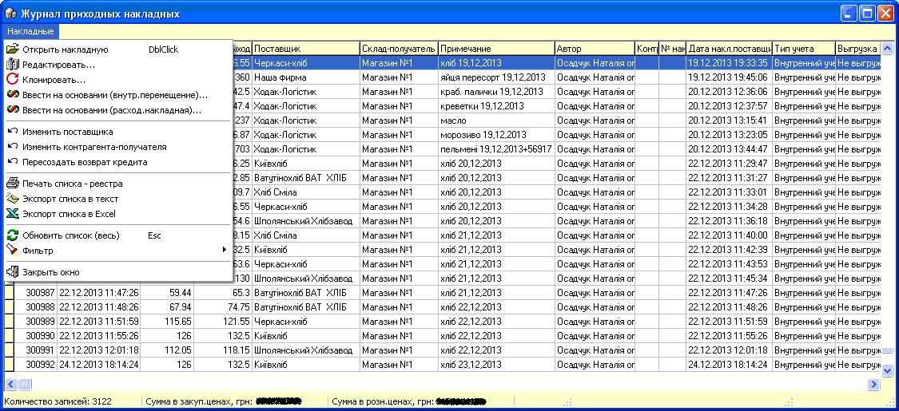
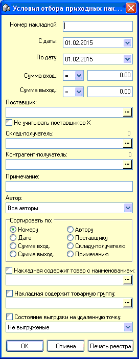
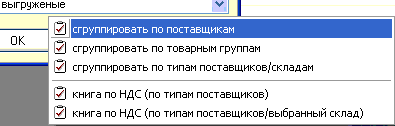
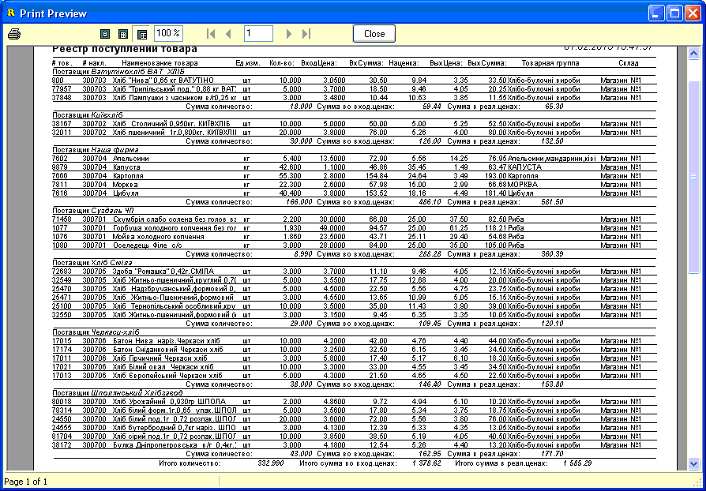

- В данном журнале обеспечивается работа с
сохраненными приходными накладными, их редактирование, отбор, печать некоторых
отчетов и т.д.
- Форма и главное меню:
- 
- Цветовая маркировка текста строк в зависимости от
типа поставщика (см.справку о справочнике контрагентов):
- "Наш магазин" - бирюзовый;
- "Поставщик" - черный;
- "Клиент" - красный;
- "Поставщик без НДС" - зеленый;
- "Поставщик Х" - серый;
- Документы связанные актом производства
маркируются цветом - фуксия (сиреневый).
- Рассмотрим работу с журналом по пунктам главного
(и контекстного) меню.
- Открыть накладную - открывает документ в режиме
просмотра, печати этикеток, ценников. Ничего изменить в накладной
нельзя.
- Редактировать... - открывает документ в режиме
редактирования (изменения табличной части сразу сохраняются в базе данных,
изменения в заголовке накладной сохраняются по факту выхода из накладной). При
попытке редактирования уже открытой на другом компьютере накладной будет
выдано предупреждение об этом и накладная открыта не будет. Исключением
является пользователь с правами администратора - ему будет позволено это
сделать и разблокировать такую накладную. Такие ситуации могуь возникать при
неожиданном отключении компьютеров, например, при пропадании
электроэнергии.
- Клонировать... - создает новую накладную,
копию-клон оригинальной накладной. Очень удобно для прихода товара от
поставщиков, которые возят каждый раз одинаковый ассортимент.
- Ввести на основании (внутреннее перемещение)... -
после появляющегося запроса выбора Склада-получателя, создает новый документ
внутреннего перемещения товаров со склада на который товар первоначально был
оприходован на склад, указанный пользователем.
 Внимание! Количество попадающего в такое
перемещение товара равно фактически оставшемуся на исходном складе остатку
товара.
Внимание! Количество попадающего в такое
перемещение товара равно фактически оставшемуся на исходном складе остатку
товара.- Ввести на основании (расходная накладная)... -
аналогичное по действию предыдущего пункта меню, только создаваемый документ -
Расходная накладная.
- Изменить поставщика - позволяет перевыбрать и
пересохранить в заголовке выбранной накладной нового поставщика,
также изменив это значение в партиях товара, созданных данной
накладной.
- Изменить контрагента-получателя - аналогичное
предыдущему пункту меню действие, только с указанным значением.
- Пересоздать возврат кредита - заново создать
связанную с данной накладной запись о задолженности перед поставщиком в
документе "Взаиморасчеты с контрагентами".
- Печать списка-реестра - выводит на печать список
отобранных с помощью фильтра, либо всех что есть приходных
накладных.
- Экспорт списка в тест - создает текстовый файл в
каталоге с программой, в который выгружает список отобранных с помощью
фильтра, либо всех что есть приходных накладных.
- Экспорт списка в Excel - аналогично предыдущему
пункту меню, только выгружает xls-файл.
- Обновить список (весь) - перечитывает список всех
накладных с сервера.
- Фильтр - позволяет отобрать список накладных,
согласно необходимых критериев:
- 
- Значения критериев отбора ясны из их названий.
Более подробно рассмотрим кнопку "Печать реестра", которая содержит под собой
меню печати некоторых готовых отчетов по приходным накладным (более
расширенное количество отчетов по поступлению товара содержится в "Отчетах" -
см.соответствующий раздел справки).
- ва
- Как пример, можно привести вид отчета первого
пункта меню - "сгруппировать по поставщикам", отобранного за период
выбранный на форме фильтра:
- 